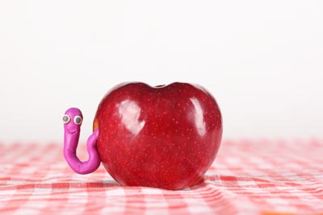
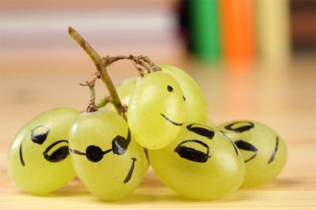
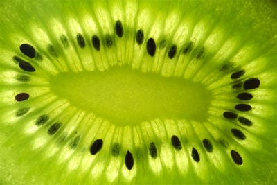
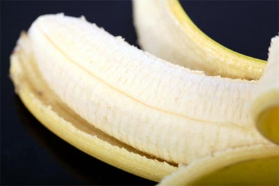

La pomme est le fruit du pommier, arbre fruitier largement cultivé. L’arboriculture fruitière est une branche de l’arboriculture spécialisée dans la culture des arbres fruitiers afin d'en récolter les fruits ou les faux-fruits comme la pomme du pommier domestique.

Le raisin est le fruit de vignes du genre Vitis. Il se présente sous la forme de grappes composées de nombreux grains, qui sont sur le plan botanique des baies, de petite taille et de couleur claire, pour le raisin blanc ou plus foncée, pour le raisin rouge.

Les kiwis sont des fruits de plusieurs espèces de lianes du genre Actinidia, famille des Actinidiaceae. Ils sont originaires de Chine, notamment de la province de Shaanxi. On en trouve par ailleurs dans des climats dits montagnards tropicaux.

La banane est le fruit, ou baie dérivant de l’inflorescence du bananier. Les bananes constituent un élément essentiel du régime alimentaire de certains pays développés et constituent une nourriture de base pour des millions de personnes sous les tropiques.